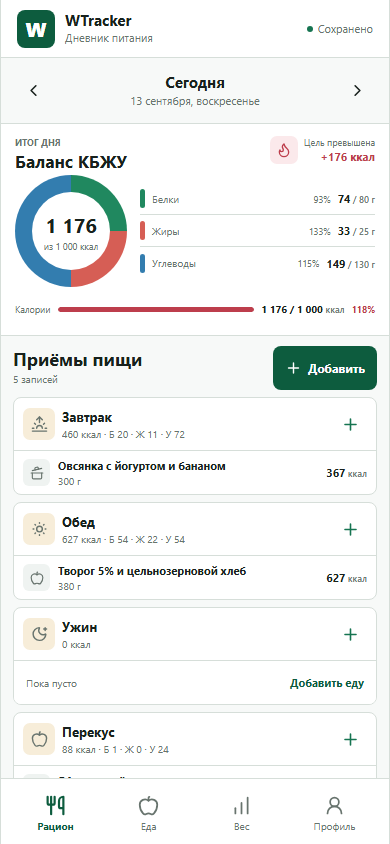
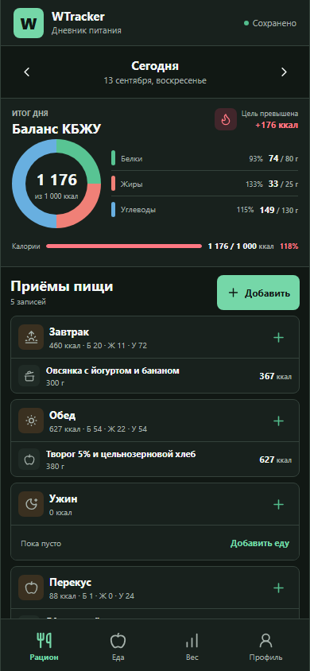
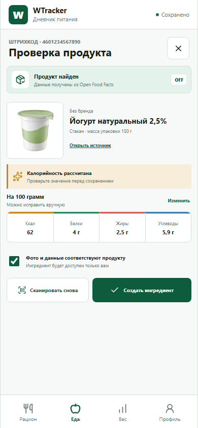
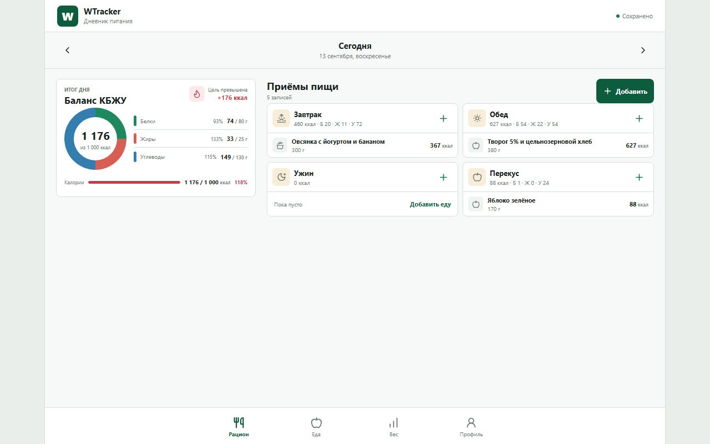

Финальные blueprints Mini App
Выбранное направление: оболочка и экраны A, компактное кольцо КБЖУ и численная легенда из B. Это контрольный макет до переноса системы в production React/CSS.
Рацион

ration-light-390x844.png
ration-dark-390x844.pngОсновные разделы

food-light-390x844.png
barcode-review-light-390x844.png
weight-light-390x844.png
weight-dark-390x844.png
profile-light-390x844.pngDesktop

desktop-1280x800.png